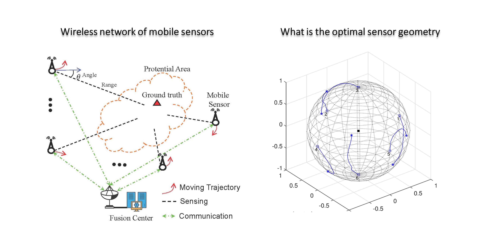

|
Research Interests
My general research interest is in nonlinear optimization, signal processing and machine learning with applications in wireless sensing and communications. ’
My current research topics include:
Radar Signal Processing
Waveform design for active sensing
Reconfigurable Intelligent Surface
Integrated sensing and communications
Wireless sensor networks
Radar Waveform Design
 |
Radar waveform design is crucial for enhancing the performance of radar systems.
This research focuses on optimizing radar waveforms to achieve superior detection and estimation capabilities.
Advanced optimization methods are employed to develop waveforms that balance resolution and ambiguity,
thereby improving target detection, classification, and tracking in various operational environments.
Selected Publications:
L. Wu, X. Cheng, H. Huang, D. Ciuonzo, B. Shankar and B. Ottersten, “Constant-Modulus Waveform Design with Polarization-Adaptive Power Allocation in Polarimetric Radar”, IEEE Transactions on Signal Processing, vol. 71, pp. 2146-2161, 2023.
L. Wu and D. P. Palomar, “Sequence Design for Spectral Shaping via Minimization of Regularized Spectral Level Ratio”, IEEE Trans. on Signal Processing, vol. 67, no. 18, pp. 4683-4695, Sep. 2019.
L. Wu, P. Babu and D. P. Palomar, “Transmit Waveform/Receive Filter Design for MIMO Radar with Multiple Waveform Constraints”, IEEE Trans. on Signal Processing, vol. 66, no. 6, pp. 1526-1540, Mar. 2018.
|
Reconfigurable Intelligent Surface for Wireless Sensing
 |
Reconfigurable Intelligent Surfaces (RIS) revolutionize wireless sensing by enabling dynamic control of the propagation environment.
This research explores the integration of RIS in wireless networks to enhance signal strength, coverage,
and reliability. Innovative techniques are developed to harness RIS for improved accuracy and efficiency in sensing applications,
paving the way for smart, responsive environments.
Selected Publications:
Z. Xie, L. Wu, J. Zhu, M. Lops, X. Huang and M. R. B. Shankar, “RIS-Aided Radar for Target Detection: Clutter Region Analysis and Joint Active-Passive Design,” in IEEE Transactions on Signal Processing, vol. 72, pp. 1706-1723, 2024.
T. Wei, L. Wu, K. V. Mishra and B. Shankar, “RIS-Aided Wideband Holographic DFRC,” in IEEE Transactions on Aerospace and Electronic Systems, doi: 10.1109/TAES.2024.3374272.
T. Wei, L. Wu, K. V. Mishra and M. R. B. Shankar, “Multi-IRS-Aided Doppler-Tolerant Wideband DFRC System,” in IEEE Transactions on Communications, vol. 71, no. 11, pp. 6561-6577, Nov. 2023.
|
Integrated Sensing and Communications
 |
Integrated Sensing and Communications (ISAC) represents a forward-thinking approach to next-generation networks,
combining sensing and communication within a unified framework. This research aims to create seamless ISAC solutions
that optimize the use of resources for both data transmission and environmental sensing.
These advancements are crucial for applications such as autonomous vehicles and smart cities, where real-time data and reliable communication are essential.
Selected Publications:
H. Huang, L. Wu, B. Shankar and A. M. Zoubir, “Sparse Array Design for Dual-Function Radar-Communications System,” in IEEE Communications Letters, vol. 27, no. 5, pp. 1412-1416, May 2023.
M. Deng, Z. Cheng, L. Wu, B. Shankar and Z. He, “One-Bit ADCs/DACs Based MIMO Radar: Performance Analysis and Joint Design,” in IEEE Transactions on Signal Processing, vol. 70, pp. 2609-2624, 2022.
L. Wu, K. V. Mishra, M. R. B. Shankar and B. Ottersten, “Resource Allocation in Heterogeneously-Distributed Joint Radar-Communications Under Asynchronous Bayesian Tracking Framework,” in IEEE Journal on Selected Areas in Communications, vol. 40, no. 7, pp. 2026-2042, July 2022.
|
Sensor Placement for Localization
|
 |
Effective sensor placement is critical for achieving high-precision localization in wireless sensor networks.
This research focuses on developing optimization algorithms that determine the optimal placement of sensors to
enhance the accuracy and reliability of location estimates. This work is essential for applications in navigation,
tracking, and monitoring, ensuring robust performance even in complex environments.
Selected Publications:
L. Wu, N. Sahu, S. Xu, P. Babu and D. Ciuonzo, “Optimization Based Sensor Placement for Multi-Target Localization With Coupling Sensor Clusters,” in IEEE Transactions on Signal and Information Processing over Networks, vol. 9, pp. 596-611, 2023.
S. Xu, L. Wu, K. Doğançay and M. Alaee-Kerahroodi, “A Hybrid Approach to Optimal TOA-Sensor Placement With Fixed Shared Sensors for Simultaneous Multi-Target Localization,” in IEEE Transactions on Signal Processing, vol. 70, pp. 1197-1212, 2022.
N. Sahu, L. Wu, P. Babu, B. S. M. R. and B. Ottersten, “Optimal Sensor Placement for Source Localization: A Unified ADMM Approach,” in IEEE Transactions on Vehicular Technology, vol. 71, no. 4, pp. 4359-4372, April 2022.
|
|